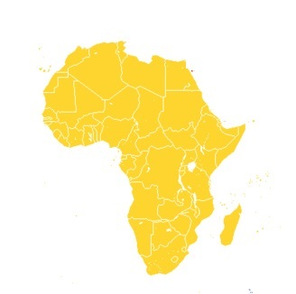
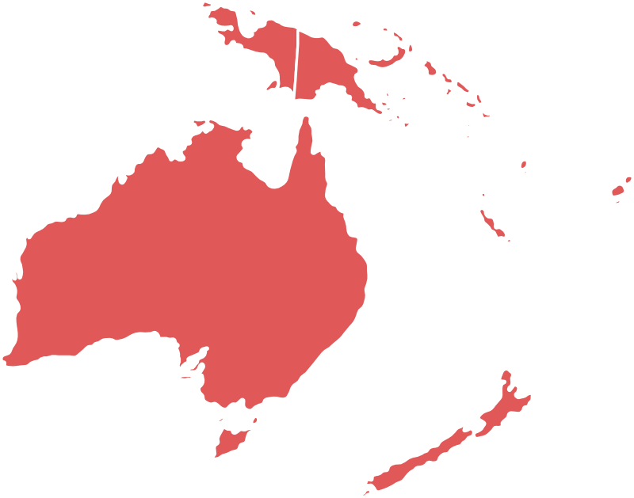
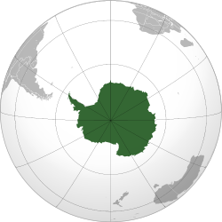

|  |  |
 |
 |
 |
 |  |
|---|
| Pa zaènimo pri najstarejši celini. Ko Afriko spoznaš bolje ugotoviš, da to niso samo prostrane pušèave, kjer ves dan neusmiljeno pripeka Sonce. Afrika je pravzaprav lepa celina z še veliko neizkorišèenega potenciala. |
|
| GEOLOŠKA ZGRADBA AFRIKE: Kot je bilo že reèeno je Afrika najstarejši kontinent. Celina je ostanek Gondvane, dela prakontinenta Pangea, ta je razpadla na veè delov. Medtem, ko so ostali deli »odpluli« je Afrika ostala skorajda na istem mestu. Afriško površje, ki ga sestavljajo predvsem magmatske in metamorfne kamnine (granit, gnajs) danes tako ni pretirano razèlenjeno. Ima pa Afrika še eno posebnost. Afriški šèit ima veliko pragov, kar pomeni da ima skoraj vsaka reka Afrike brzice ali pa slapove. Najbolj znani so gotovi Viktorijini slapovi na reki Zimbabve. Pragovi tudi onemogoèajo, da bi bile reke plovne vse do osrèja Afrike, saj ladje ne morejo preèkati brzic ali pa slapov, to pa lahko pomeni hudo zaostalost, saj afriške reke niso toliko zanimive za turiste (razen Nila, ki je izjema) ampak ponekod še vedno predstavljajo pomembnejše prometne povezave. So pa ti strmi padci rek odlièna priložnost za razvijanje energetskega gospodarstva. Hidroenergija predstavlja velik potencial Afrike, ki pa žal še ni izkorišèen. Verjetno najmanj mikaven dejavnik, ki odbija množice turistov pa je po najinem mnenju podnebje. Tako vroèe in soparno ni nikjer drugje. Vzrok za to pa tièi v geografski legi Afrike. Veèina celine namreè leži v tropskem pasu saj ekvator Afriko skoraj razpolavlja. To pa pomeni, da je Afrika najbolj vroèa celina. Seveda nekaj doprinesejo tudi morski tokovi in orografske ovire (gorovja) ki dežju ne pustijo èez in so glavni krivec za nastanek toliko pušèav. |
|
| DEMOGRAFSKA ZGRADBA AFRIKE: Afriko po navadi enaèimo z ljudmi temne rese, vendar ni èisto tako. Afrika se tudi demografsko deli. V severni Afriki, ki leži višje od Sahare veèinsko prebivalstvo predstavljeno Arabci tudi jeziki in vera se skladata s kulturo iz bližnjega vzhoda. Toda Podsaharska Afrika, je nekaj popolnoma drugaènega. Tukaj živi tisto »znaèilno« afriško prebivalstvo, ki je po jezikovni in verski sestavi bistveno bolj pisano, kot Afriški sever. Verovanj približno toliko kot je plemen torej nešteto, v glavnem pa se prepletajo kršèanska vera in pa razlièni animizmi. Tudi jezikov je ogromno vendar pa so danes v Afriški državah uradni jeziki kolonialistov, torej francošèina, anglešèina, nizozemšèina… Kolonializem, kolonije, kolonisti to so besede, ki opišejo bolj ali manj temno obdobje Afriške zgodovine. Zgodilo se je v 15. stoletju ko so Portugalci obpluli rt Dobrega upanja in si tam postavili postojanke, ki so potem vodile v razvoj pravega kolonializma. Obdobja se bomo veèno spominjali po neusmiljeni in neèloveški Evropski politiki. A za Afriko se družbene krize niso konèale s padcem kolonializma. Tudi danes ta del zemlje pestijo številni družbeni problemi. Na primer pomlad narodov, ki se je zaèela v Tuniziji leta 2010 ali pa etnièni in verski konflikti, zagotovo je vsem poznana tudi politika rasnega razlikovanja oziroma apartheid v Južno Afriški Republiki in še bi lahko naštevali. Ni tako dolgo nazaj ko pa smo poslušali, da je Afrika v hudi krizi pa ne zaradi vojne ali suše ampak zaradi bolezni. Afriške bolezni se pojavljajo v tako velikem obsegu, ker Afrièani nimajo zadostne zdravstvene oskrbe, ker so tam slabe socialne razmere (slaba higiena in neèistoèa) nekaj krivde pa nosi tudi toplo in vlažno podnebje, ki ponuja odlièno okolje za razvoj mrèesa, ki je po navadi prenašalec hudih obolenj. Tako so tukaj malarija, ebola, aids, kuga, spalna bolezen, reèna slepota, Bilharzova bolezen, rumena mrzlica in še mnoge druge bolezni del vsakdana, medtem ko jih v bolj razvitem svetu skorajda ne poznamo. |
|
ggg